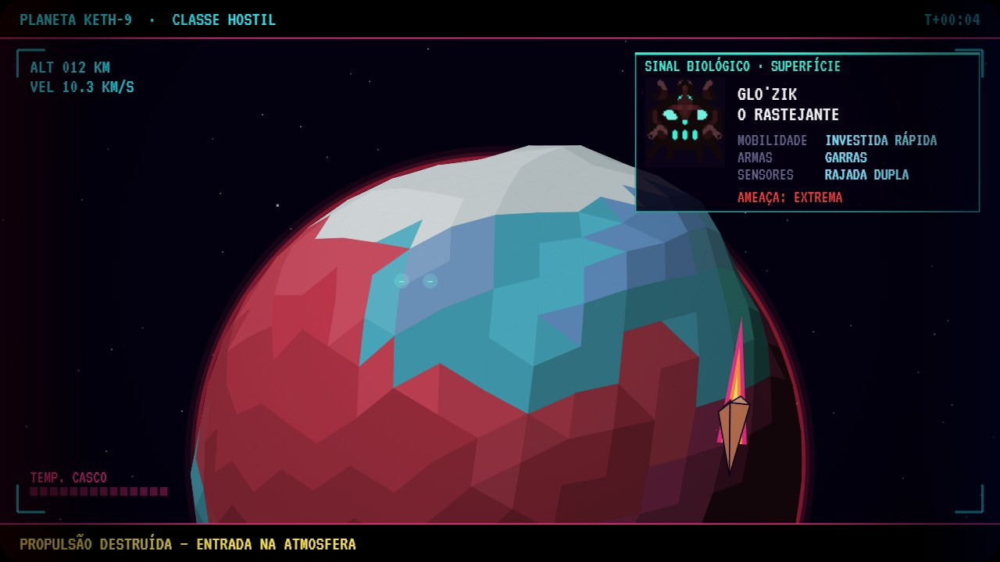
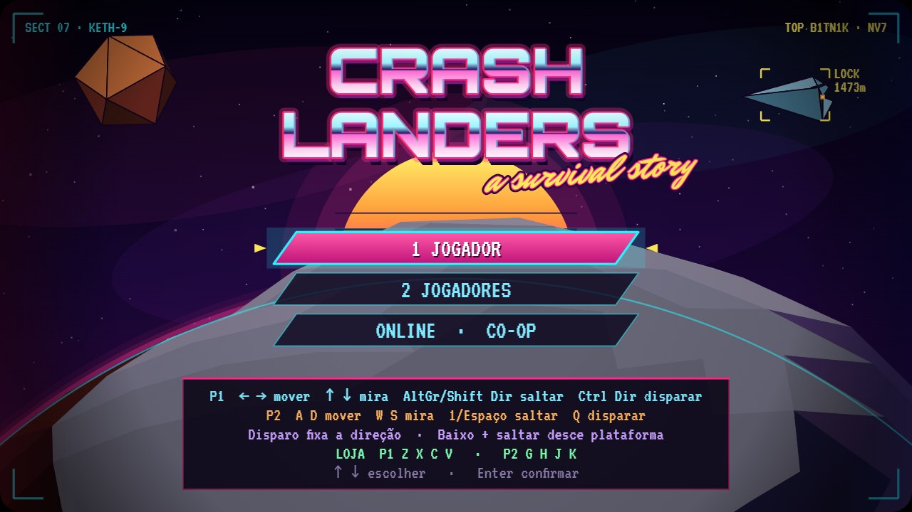
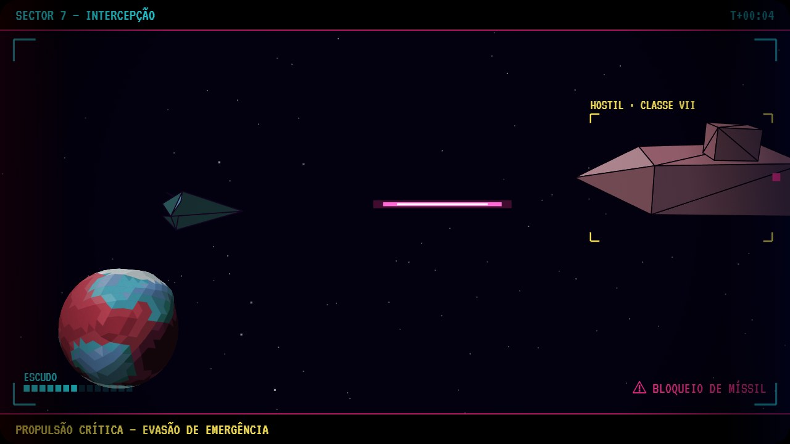
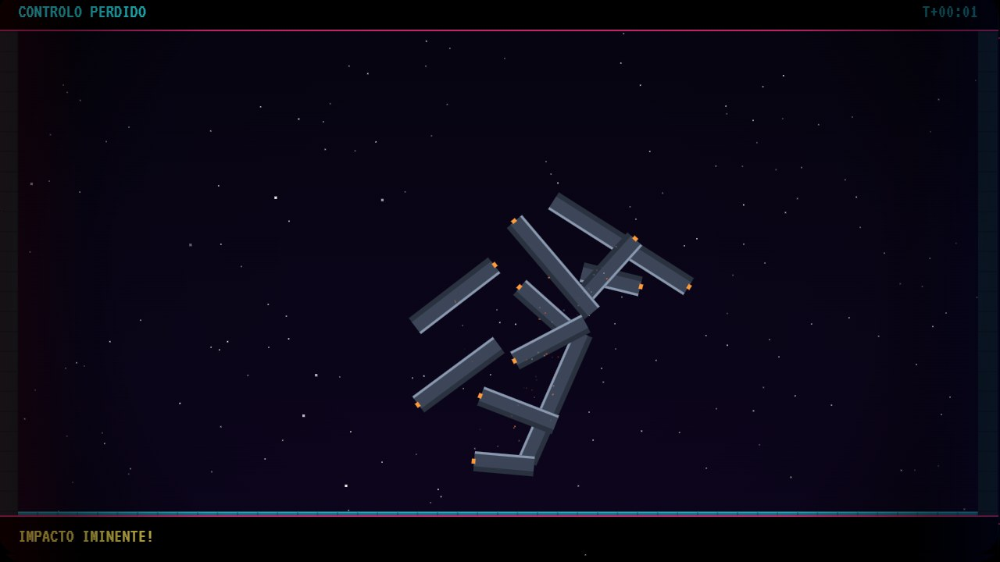
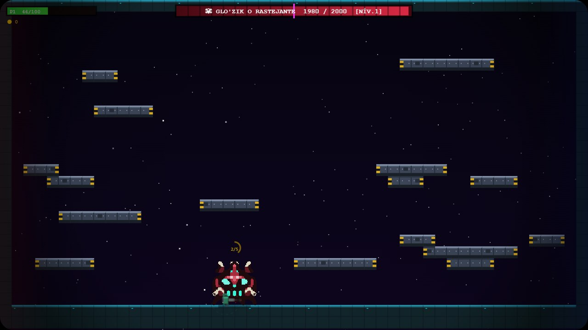
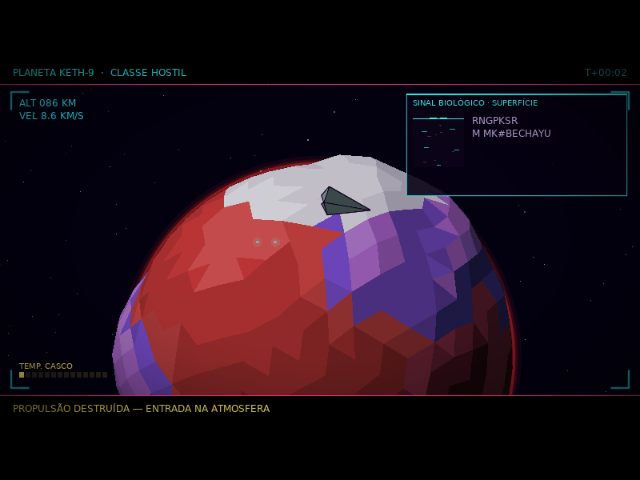
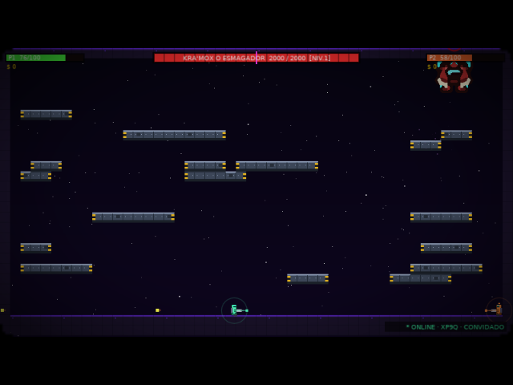

Despenhas-te num planeta hostil, abrigas-te nos destroços da tua própria nave e enfrentas um senhor alienígena diferente em cada nível. Joga sozinho ou a dois, no browser, numa Anbernic RG35XX H, ou nos dois ao mesmo tempo.

// O JOGO
Uma mistura de plataformas e tiros contra um boss, com o visual neon dos anos 80 e polígonos 3D à moda de 1990.
Cabeça, olhos, boca, corpo, braços, pernas e costas: 2187 combinações. As pernas, os braços e os olhos mudam a forma como o boss se move e ataca.
Ao cair, a tua nave desfaz-se. Cada pedaço aterra no mapa e torna-se uma plataforma de casco metálico, que os tiros vão rachando.
O planeta tem as cores do boss, há olhos a brilhar no lado escuro e um scan de longo alcance revela o nome e as habilidades do inimigo.
Dois jogadores no mesmo teclado, duas consolas na mesma rede, dois browsers pela internet, ou browser contra consola.




// INSTALAR
O jogo corre no motor LÖVE e instala-se através do PortMaster, que vem com o muOS. São três ficheiros num zip; o PortMaster trata do resto.
crashlanders.zip — não o descomprimas.
Põe o zip na pasta MUOS/PortMaster/autoinstall/ do cartão SD (a pasta autoinstall dentro da pasta do PortMaster).
Ele encontra o zip e instala o jogo sozinho. Na primeira vez também descarrega o runtime LÖVE 11.5, por isso a consola precisa de Wi-Fi.
O jogo aparece em Ports como Crashlanders. Os saves e as pontuações ficam dentro da pasta do jogo.
Fontes opcionais: por omissão a versão da consola usa a fonte do LÖVE. Para ficar igual ao browser, copia os TTF de Orbitron, VT323, Mr Dafoe e Share Tech Mono (Google Fonts, licença OFL) para crashlanders/gamedata/assets/fonts/.
| Ação | RG35XX H / comando | Teclado P1 | Teclado P2 |
|---|---|---|---|
| Mover · mirar | D-pad ou stick | Setas | W A S D |
| Saltar | A | AltGr / Shift dir. | 1 / Espaço |
| Disparar (segurar fixa a direção) | B ou R2 | Ctrl dir. | Q |
| Descer de uma plataforma | Baixo + A | ↓ + saltar | S + saltar |
| Loja: arma · cadência · salto ×2 · paraquedas | X · Y · L1 · R1 | Z X C V | G H J K |
| Confirmar · saltar a intro | Start | Enter | Enter |
| Voltar ao menu | Select | Esc | Esc |


// MULTIPLAYER
Em todos os modos online um dos aparelhos é o anfitrião: corre o jogo e envia o estado ao outro cerca de 30 vezes por segundo. O convidado só envia os botões que carrega. É cooperativo: os dois contra o boss.
LOCAL
No menu escolhe 2 JOGADORES. No browser, cada um usa a sua metade do teclado. Na consola, o 2.º jogador liga um comando por USB-C.
LAN
ONLINE
CROSS-PLAY
A consola não consegue entrar diretamente nas salas do browser. Um pequeno programa no teu PC, o relay, faz a ponte. Vê os passos abaixo.
O relay entra na sala online em nome da consola e passa as mensagens nos dois sentidos. Browser e consola usam as mesmas salas de 4 letras, e qualquer um pode ser o anfitrião.
Precisas do Node.js 22 ou mais recente e do código do jogo (pasta relay/).
$ cd relay $ npm install $ npm start relay listening on tcp 47240 (LAN 192.168.1.x)
LAN · CO-OP → PROCURAR JOGO. O relay aparece como ONLINE (relay …). Escolhe CRIAR SALA (o código aparece no ecrã) ou ENTRAR COM CÓDIGO (escolhes as letras com o D-pad).
ONLINE · CO-OP e entra na sala com o mesmo código, ou cria tu a sala e dá o código a quem está na consola.
| Modo | Aparelhos | Rede | Precisa de servidor? |
|---|---|---|---|
| Local | 1 browser ou 1 consola | — | Não |
| LAN | Consola ↔ consola / PC com LÖVE | Mesma rede Wi-Fi | Não |
| Online | Browser ↔ browser | Internet | Supabase (já incluído) |
| Cross-play | Browser ↔ consola | Consola e relay na mesma rede | Relay no teu PC |
// AJUDA
Confirma que o zip está inteiro (sem o descomprimir) dentro da pasta autoinstall do PortMaster e abre o PortMaster uma vez. Na primeira instalação a consola precisa de Wi-Fi para descarregar o runtime LÖVE.
Costuma acontecer quando os ficheiros .sh ou .lua foram gravados com quebras de linha do Windows (CRLF). Usa sempre o zip gerado pelo build_zip.py ou o da página, que força quebras de linha Unix. O registo do arranque fica em ports/crashlanders/log.txt.
Os dois aparelhos (ou a consola e o PC do relay) têm de estar na mesma rede Wi-Fi. Algumas redes de convidados isolam os aparelhos uns dos outros. No PC, permite o Node.js e o LÖVE na firewall: o jogo usa as portas UDP 47231 (descoberta) e 47232 (jogo LAN) e a TCP 47240 (relay).
As salas online usam um projeto Supabase gratuito, que é pausado depois de alguns dias sem uso. Quando isso acontece tem de ser reativado no painel do Supabase; o leaderboard do browser também volta a funcionar.
O convidado vê o jogo com o atraso da ligação até ao anfitrião (normalmente 50 a 150 ms). Como é cooperativo isto pesa pouco, mas o jogador com a ligação mais estável deve ser o anfitrião.
Não. Os jogos LAN e online não tocam no save local; o teu progresso a solo continua lá.